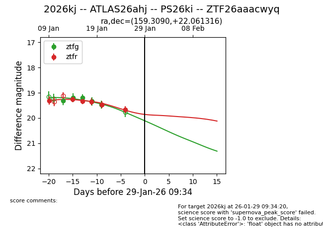
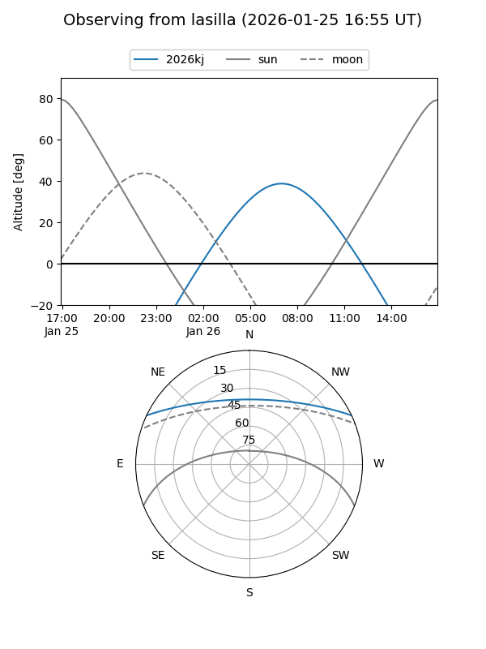
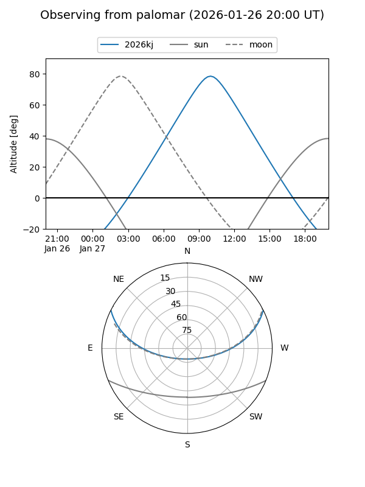
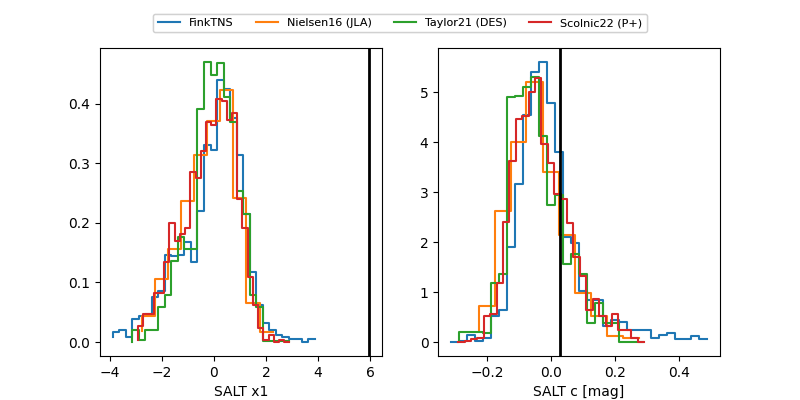

2026kj
Target 2026kj at 2026-01-27 06:26
Aliases and brokers:
FINK: link
Lasair: link
ALeRCE: link
TNS: link
YSE: link
alt names
ZTF26aaacwyq (ztf,fink_ztf)
2026kj (tns,yse)
ATLAS26ahj (atlas)
PS26ki (panstarrs)
Coordinates:
equatorial (ra, dec) = 159.3090,+22.06132
equatorial (HMS+DMS) = 10:37:14.15,+22:03:40.74
galactic (l, b) = (214.9350,+59.16819)
Flags:
Photometry:
last ztfg=19.47, ztfr=19.67
5 ztfg, 6 ztfr detections
Lightcurve

Visibility


Additional plots
